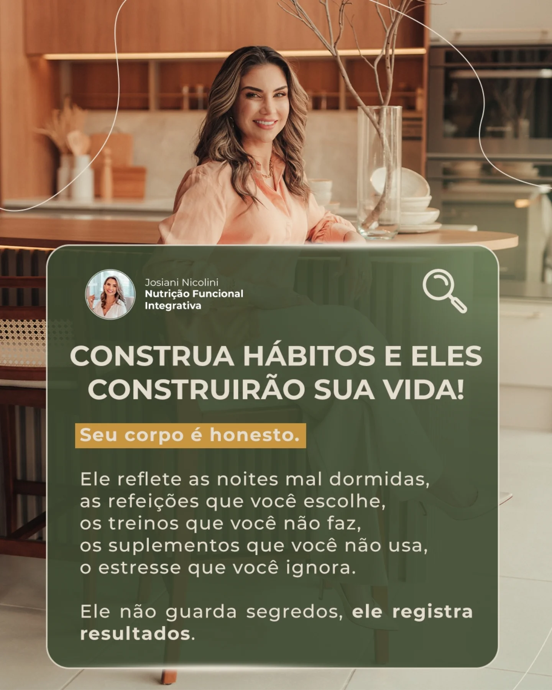

Emagrecimento sustentável
Estratégias alimentares possíveis, com foco em comportamento, saúde e continuidade.
Construa uma alimentação possível, investigando o que o seu corpo e a sua rotina realmente pedem, com estratégia e acompanhamento sem culpa.
Atendimento online e presencial [ENVIAR CIDADE]

O problema talvez nunca tenha sido falta de disciplina.
Estratégias restritivas, genéricas ou desconectadas da sua rotina não foram feitas para durar. Aqui, o processo começa pela investigação, não pela proibição.A consulta é construída a partir das suas necessidades, sintomas, histórico e contexto. Sem fórmulas prontas.
Estratégias alimentares possíveis, com foco em comportamento, saúde e continuidade.
Nutrição alinhada à sua rotina de treino, preferências e metas individuais.
Investigação nutricional para compreender desconfortos e cuidar do seu bem-estar.
Menos culpa, mais consciência e escolhas que façam sentido para você.
Acompanhamento atento às diferentes fases, demandas e sinais do corpo feminino.
Organização alimentar para quem busca mais energia e consistência no dia a dia.
Uma escuta cuidadosa sobre sintomas, exames, hábitos, rotina, preferências e objetivos.
Orientações que respeitam o seu momento e se traduzem em escolhas aplicáveis.
Espaço para ajustar a rota, tirar dúvidas e evoluir com segurança ao longo do processo.
Você entende o seu corpo e ganha repertório para fazer escolhas com mais confiança.

A nutrição funcional integrativa parte de uma premissa simples: seu corpo não é um projeto para consertar. É um sistema vivo que merece ser observado com técnica, contexto e gentileza.
Meu trabalho é transformar informações em uma estratégia clara para a sua vida, sem terrorismo nutricional e sem desconectar alimentação de sono, rotina, emoções e bem-estar.
Use apenas relatos autorizados, identificados de forma ética e sem promessas ou comparação corporal.
“[ENVIAR DEPOIMENTO AUTORIZADO: relato sobre a experiência de cuidado e autonomia.]”
Paciente identificada apenas com autorização · [ENVIAR]
“[ENVIAR DEPOIMENTO AUTORIZADO: relato sobre acolhimento, rotina ou clareza alimentar.]”
Paciente identificada apenas com autorização · [ENVIAR]
“[ENVIAR DEPOIMENTO AUTORIZADO: relato sobre o acompanhamento.]”
Paciente identificada apenas com autorização · [ENVIAR]
Depoimentos devem ser publicados somente após autorização e revisão de conformidade com o Código de Ética do Nutricionista.
A indicação de frequência, recursos e investimento acontece após entender a sua necessidade. Valores sob consulta.
Para quem prefere o encontro presencial e uma experiência de cuidado no espaço físico.
Para ser cuidado de onde estiver, com a mesma escuta e direcionamento individual.
Para quem busca continuidade, ajustes e acompanhamento mais próximo do processo.
O primeiro passo é uma conversa. A partir dela, entendemos juntos se este acompanhamento é o caminho adequado para você.
Não. A proposta é construir escolhas viáveis e conscientes, considerando suas preferências, sua cultura alimentar e seus objetivos.
Sim. A consulta online é realizada por videochamada, com escuta individual, avaliação e entrega de orientações digitais adequadas ao seu contexto.
A estratégia precisa ser possível. Sua rotina, habilidades e acesso aos alimentos entram na conversa para que as orientações sejam aplicáveis.
[ENVIAR POLÍTICA DE CONVÊNIOS, REEMBOLSO E FORMAS DE PAGAMENTO.]
A frequência é individual e definida conforme suas necessidades. O foco é oferecer continuidade suficiente para construir autonomia, não criar dependência.
Não necessariamente. Na consulta, serão avaliadas as informações disponíveis e, quando fizer sentido, você receberá a orientação adequada sobre próximos passos.
Atendimentos online para todo o Brasil e presenciais em [ENVIAR CIDADE/UF].
Conte um pouco sobre o que busca. O retorno será feito pelo WhatsApp em até [ENVIAR PRAZO] úteis.
Preencha seus dados e receba um retorno acolhedor pelo WhatsApp.